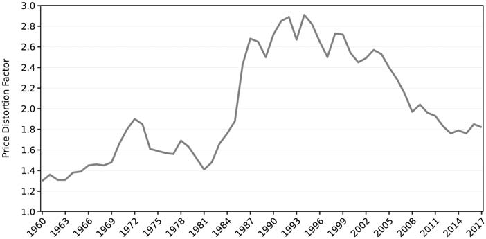
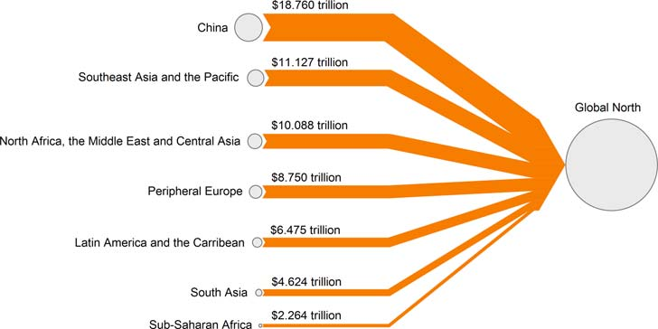

13 International Trade
13.1 ‘Free’ Trade
The case for guaranteed mutual benefit in international trade, and hence the reason for leaving it “free,” is based on Ricardo’s comparative advantage argument. A country is supposed to produce the goods that it can produce more cheaply relative to other goods, than is the case in other countries. By specializing according to their comparative advantage both trading partners gain, regardless of absolute costs (one country could produce all goods more cheaply, but it would still benefit by specializing in what it produced relatively more cheaply and trading for other goods). This is logical, but like all logical arguments comparative advantage is based on premises. The key premise is that while capital (and other factors) moves freely between industries within a nation, it does not move between nations. If capital could move abroad it would have no reason to be content with a mere comparative advantage at home, but would seek absolute advantage—the absolutely lowest cost of production anywhere in the world. Why not? With freetrade the product could be sold anywhere in the world, including the nation the capital just left. While there are certainly global gains from trade under absolute advantage there is no guarantee of mutual benefit. Some countries could lose. Now comes the problem. The IMF preaches free trade based on comparative advantage, and has done so for a long time. More recently the IMF has started preaching the gospel of globalization, which, in addition to free trade, means free capital mobility internationally—exactly what comparative advantage forbids! When confronted with this contradiction the IMF waves its hands, suggests that you might be a xenophobe, and changes the subject.
The IMF-WB-WTO ( Washington Consensus) contradict themselves in service to the interests of transnational corporations. International capital mobility, coupled with free trade, allows corporations to escape from national regulation in the public interest, playing one nation off against another. Since there is no global government they are in effect uncontrolled. The nearest thing we have to a global government (IMF-WB-WTO) has shown no interest in regulating transnational capital for the common good. Their goal is to help these corporations grow, because growth is presumed good for all—end of story. If the IMF wanted to limit international capital mobility to keep the world safe for comparative advantage, there are several things they could do. They could promote minimum residence times for foreign investment to limit capital flight and speculation, and they could propose a small tax on all foreign exchange transactions (Tobin tax). Most of all they could revive Keynes’ proposal for an international multilateral clearing union that would directly penalize persistent imbalances in current account (both deficit and surplus), and thereby indirectly promote balance in the compensating capital account, reducing international capital movements.
Herman Daly (2008) Steady State Economy (Sustainable Development Commision)](http://\ www.sd-commission.org.uk/publications.php@id=775.html) (pdf)
13.2 Unequal Exchange
Hickel
This paper quantifies drain from the global South through unequal exchange since 1960. According to our primary method, which relies on exchange-rate differentials, we find that in the most recent year of data the global North (‘advanced economies’) appropriated from the South commodities worth $2.2 trillion in Northern prices — enough to end extreme poverty 15 times over. Over the whole period, drain from the South totalled $62 trillion (constant 2011 dollars), or $152 trillion when accounting for lost growth. Appropriation through unequal exchange represents up to 7% of Northern GDP and 9% of Southern GDP. We also test several alternative methods, for comparison: we quantify unequal exchange in terms of wage differentials instead of exchange-rate differentials, and report drain in global average prices as well as Northern prices. Regardless of the method, we find that the intensity of exploitation and the scale of unequal exchange increased significantly during the structural adjustment period of the 1980s and 1990s. This study affirms that drain from the South remains a significant feature of the world economy in the post-colonial era; rich countries continue to rely on imperial forms of appropriation to sustain their high levels of income and consumption.
The dominant assumption in the field of international development holds that the economic performance of nations is due primarily to their internal, domestic conditions. High-income countries have achieved economic success because of good governance, strong institutions and free markets. Lower-income countries have failed to develop because they lack these things, or because they suffer from corruption, red tape and inefficiency. Therefore, development interventions should focus primarily on fixing domestic policy in global South countries, with the assistance of aid from donor governments. This view has long come under criticism. Methodological nationalism – analysing each country in isolation – erases the longstanding inequitable relationships between countries that have defined the global economy for the last 500 years.
When we take this history into account, it becomes evident that the wealth of high-income nations depends on processes of appropriation from the rest of the world. This was clear during the colonial period, but it also remains true today.
Our results affirm that drain from the global South remains a significant feature of the world-economy in the post-colonial era. ‘Advanced economies’ rely on unequal exchange to facilitate their economic growth and to sustain high levels of income and material consumption. In recent years, the drain has amounted to around $2.2 trillion per year (constant 2011 dollars) in Northern prices, or $1.3 trillion per year in global average prices, when calculated according to exchange-rate differentials. The intensity of exploitation and the scale of unequal exchange increased significantly during the structural adjustment period of the 1980s and 1990s. These patterns of appropriation through North–South trade are a major driver of global inequality and uneven development.
There is little evidence to suggest that the North does in fact have a productivity advantage over the South when it comes to production for international trade. Most Southern export industries use advanced technologies provided by foreign capital. At least 75% of the South’s exports in 1966 were produced in ‘the ultra-modern capitalist sector (oil, mining and primary processing of minerals, modern plantations – like those of United Fruit in Central America, or of Unilever in Africa and Malaysia).’ Given the extent of offshoring since the 1980s, it is likely that the proportion has only increased.
Beyond considering the impact of technology and capital on productivity, we should also consider the impact of different modes of labour control. Workers in the South are subject to rigid Taylorist rules that would fall foul of labour law in the North. Chinese workers who produce smart phones describe being ‘trapped in a concentration camp of labor discipline’ where foreign corporations ‘sacrifice our dignity as people for production efficiency.’ Prices are not determined by productivity, but by the monopoly power of Northern governments and multinational corporations.
One might argue that the higher wages of workers in the North reflect their greater productivity. Yet this assumption is belied by a 1971 study of export processing zones in Mexico, which found that Mexican metal workers, electronics workers and seamstresses produced 10%-40% more output in an hour than their US counterparts. Southern wages are lower than Northern wages despite the fact that Southern workers are more productive and efficient.
It is the ‘suppression of international labour mobility’ combined with ‘the destitution of a large part of the [South’s] working population’ which explains ‘why a haircut or a bus journey in Dhaka is so much cheaper than in Amsterdam,’ not ‘the allegedly so much lower productivity of workers in the tradeable goods sector.’
Measuring drain from the periphery is inherently difficult because it is, by definition, hidden in the price structure of the world-economy. Nevertheless, the South’s wages and real exchange rates indicate that Southern prices have been kept artificially low, which enables pat- terns of imperial appropriation that remain a dominant feature of the world economy.
History
The historical record demonstrates that, during the colonial period, Western European nations depended for their development on extraction from other parts of the world. Britain’s industrial revolution depended in large part on cotton, which was grown on land forcibly appropriated from Indigenous Americans, with labour appropriated from enslaved Africans. Other crucial inputs required by British manufacturers – hemp, timber, iron, grain – were produced using forced labour on serf estates in Russia and Eastern Europe. Meanwhile, British extraction from India and other colonies funded more than half the country’s domestic budget.
It is impossible to understand the industrialisation of high-income countries without reference to the patterns of extraction that underpinned it.
The general logic of colonisation was to integrate the global South into the Europe-centered world economy on unequal terms. The South (the ‘periphery’) was made to serve as a source of cheap labour and raw materials for the North (the ‘core’), and as a captive market for Northern manufactured goods.
Beginning in the 1950s, economists and historians associated with dependency theory and world-systems theory argued that this relationship continues to define the global economy in the post-colonial era.
Recent empirical data confirms that high-income nations continue to rely on a large net appropriation of labour and resources from the rest of the world. In 2015, this amounted to 10.1 billion tons of embodied raw material equivalents (accounting for 50% of total consumption in high-income nations), and 182 million person-years of embodied labour (28% of their total consumption) from low- and middle-income nations. Note that these figures represent resources and labour embodied not only in primary commodities but also in high-technology industrial goods such as iPhones, computer chips, cars, designer clothes, etc., which over the past few decades have come to be overwhelmingly produced in the South.
This net appropriation occurs because prices are systematically lower in the South than in the North. For instance, wages paid to workers in the South are on average one-fifth the level of Northern wages. This means that for every unit of embodied labour and resources the South imports from the North, they have to export many more units to pay for it. A process of ‘unequal exchange,’ which constitutes a ‘hidden transfer of value’ from South to North.
Theorists of unequal exchange argue that global price inequalities are artefacts of historical and contemporary forces that depress the cost of labour and resources in the South. During the colonial period, dispossession and the destruction of subsistence economies created a surplus of unemployed labour.
Following independence, when Southern governments attempted to improve wages and resource prices, Western powers often intervened to remove them from power.
In the contemporary era, subsidised grain exports from the North, and land grabs by multinational companies, continue to undermine subsistence economies, placing downward pressure on wages.
Structural adjustment programmes (SAPs) imposed on the South by the IMF and World Bank have cut public sector wages and employment, while rolling back labour rights and curtailing unions.
Finally, the South’s dependence on external finance means that Southern govern- ments must compete with one another to offer cheaper wages and resources to attract foreign investment. Low wages are ultimately maintained through militarised borders, which preclude easy migration from South to North, and thus prevent international wage convergence.
Just as Southern prices are kept artificially low, Northern prices are kept artificially high. Northern firms control 97% of patents – a form of monopoly power that, bolstered by the TRIPS agreement under the WTO, enables them to extract returns well in excess of free market rates. Moreover, high-income nations exercise monopoly power within the core institutions of economic governance. In the World Bank and the IMF, the G8 hold a majority share of votes, allowing them to determine the rules of international finance. In the World Trade Organization, bargaining power is determined by market size, enabling high-income nations to set trade rules in their interests. Neoliberal policies imposed by these institutions have forced global South governments to remove tariffs, subsidies and other infant industry protections, preventing them from developing the industrial capacity to compete with the North. As a result, a relatively small number of firms from high-income countries have grown so large that they now control an overwhelming share of the world economy, ’with revenues that exceed the GDP of most sovereign countries. These firms can set final prices that are effectively insulated from competition, while depressing input costs across their supply chains.
The deployment of geopolitical and monopoly power by Northern states and corporations main- tains price differentials that enable them to appropriate labour and resources from the South through international trade.
Several attempts have been made to estimate the scale of the South’s losses through unequal exchange.
Samir Amin (1976, p. 144) calculated that ‘if the rewards of labor were equivalent to what they are at the center, with the same productivity,’ the South’s revenues from exports to the North would have been $152 billion higher in 1966 (updated to constant 2011 dollars). This method has been improved upon by Zak Cope (2019, p. 81), who devised a way to distinguish between losses the South suffers due to the ‘undervaluation’ of their exports (comparing the South’s wages to global average wages), and losses they suffer due to the ‘overvaluation’ of imports (comparing the North’s wages to global average wages). He finds that in 2010, the South lost $2.8 trillion in hidden value appropriated by the North.
n the late-1990s, a second method for quantifying unequal exchange was developed by Gernot Köhler (Köhler 1998; Köhler and Tausch 2002, p. 43–100). Instead of looking at wage differentials, Köhler uses the distortion factor between market exchange rates (MER) and purchasing power parity (PPP) as a proxy for calculating how much higher Southern export prices would be if valued in Northern prices. Using this approach, Köhler estimates that the South lost $134 billion in unequal exchange in 1965, a figure which rose to $2.586 trillion in 1995 (updated to constant 2011 dollars). Köhler (2003) also employed a simplified version of his formula (using arithmetic rather than weighted averages to estimate exchange rate distortion) to construct annual estimates of unequal exchange from 1960 to 1998. His data showed that the South lost $27.7 trillion (updated to constant 2011 dollars) over that period.
Exchange Rate Differentials (ERDI)
Köhler measures value transfer through unequal exchange by starting with the exchange rate disparities between Northern countries and Southern countries. For instance, Köhler notes that India’s GDP per capita in 1995 was US$1,400 in PPP terms (i.e. measured at the US price level), but only US$340 in MER. Dividing PPP by MER yields what Köhler calls the ‘Exchange Rate Deviation Index,’ or ERDI. For India in 1995, ERDI was 4.12. Put differently, prices in the US were 4.12 times higher than in India. For Northern countries, by contrast, ERDI is generally very close to 1. Köhler proposes that we can use ERDI to measure value transfer. His formula is as follows:
\[T = d∗X –X\]
Where:
T = value transferred through unequal exchange
X = exports from periphery to core
d = the ratio of the peripheral country’s ERDI to the core country’s ERDI
There are two ways to conceptualise Köhler’s approach to value transfer. Some scholars have interpreted it as the amount of additional income that the South would have earned on its exports under conditions of fair-trade (Köhler 1998; Somel 2003). In other words, value transfer is calculated under the assumption that Southern exporters could receive Northern prices in a fairer world. One might criticise this approach on the grounds that it is impossible for all countries to achieve Northern prices, given that Northern prices are high because of imperial power, which cannot be universalised. But there is another, more robust way to conceptualise Köhler’s approach, namely, as measuring the value of commodities that the South transfers uncompensated to the North in terms of the Northern price level.
This represents commodities that the South could have sold on world markets, as well as labour and resource inputs that could have been used to meet domestic needs, but which were instead transferred gratis to the North. It also represents a significant windfall for the North, in terms of the money saved by acquiring goods from the South, on unequal terms, rather than producing them domestically at Northern prices. These savings are available for reinvestment in Northern econ- omic development and to enhance the North’s economic and geopolitical power, which further enables unequal exchange.

Figure: Price Distortion Factor (1960–2017).

Figure: Drain from the global South (1960–2017).
Our results affirm that drain from the global South remains a significant feature of the world- economy in the post-colonial era. ‘Advanced economies’ rely on unequal exchange to facilitate their economic growth and to sustain high levels of income and material consumption. In recent years, the drain has amounted to around $2.2 trillion per year (constant 2011 dollars) in Northern prices, or $1.3 trillion per year in global average prices, when calculated according to exchange- rate differentials. The intensity of exploitation and the scale of unequal exchange increased signifi- cantly during the structural adjustment period of the 1980s and 1990s. These patterns of appropria- tion through North–South trade are a major driver of global inequality and uneven development.
Hickel (2021) Plunder in the Post-Colonial Era (Paywall) Author’s pdf (pdf)
Gräbner
‘Unequal Exchange’ between the core and the periphery. This concept goes back to Prebisch (1950) and Singer (1950), who have identified an unequal exchange between primary goods produced in the peripheries and industrial goods produced in the cores. They found that this leads to a constant deterioration of the terms of trade for the peripheries with adverse consequences for industries in peripheries. Emmanuel (1972) picks this up and comes up with his own theory of unequal exchange in which he puts differences in wages at the heart of his explanation for the uneven development between cores and peripheries hindering the development in peripheries.
13.3 Core-Periphery
Gräbner
Trade in the Eurozone is unequal at the expense of the peripheries and follows a pattern of “unequal technological exchange”
Complex goods are manufactured and exported from the core, simple goods are manufactured and exported by the peripheries. We argue that this unequal technological exchange is the result of a ‘vicious specialization’ and is effectively hampering the development of the peripheries. It thereby adds to the dimensions of ‘unequal exchange.
The present paper complements structuralist theory with methods and concepts from the literature on economic complexity.
At the core of the complexity literature is the idea that a key explanation for a society’s wealth is the ability of its citizens to collectively engage in sophisticated economic activities, such as the production of complex products. Analyzing inter- national trade data with tools from network science allows the delineation of indicators that measure the complexity of products (i.e. the amount of technological capabilities needed to produce the product) and of countries (i.e. the amount of collective capabilities accumulated in this society). The resulting formal apparatus allows for the empirical identification of core-periphery patterns in global production structures, as anticipated by earlier structuralist scholars.
The institutional shift that came along with the monetary integration can be understood as a shift in political power away from national democratic institutions and towards technical state apparatuses which made it in- creasingly difficult to challenge those asymmetric structures. The same can be said for the responses to the Euro crises, which was driven by the interest of core countries.
The European core has followed an export-driven growth model and the periphery has followed mainly a debt-driven growth model, which was rendered infeasible after the crisis.
Why some countries have seen the emergence of a debt-led rather than an export-led growth model to stabilize aggregate demand [is explained by] non-price competitiveness, which mainly depends on the accumulation of technological capabilities.
Three main challenges for country taxonomies as used in structuralism that are underlying these difficulties: first, the challenge of dynamics, which refers to the fact that countries might switch from one group to another over time. Ireland is an ex- ample that comes immediately to mind which switched from being a periphery, very depended on the UK, to a financial- ized country with considerable GDP growth throughout the 1990s (notwithstanding more recent problems of Irish GDP accounting). Second, the challenge of ambiguity, according to which countries might belong to the core in one sense, and the periphery in another sense. France, for instance, is a politically important player, yet features some typical economic characteristics of peripheries. Third, the challenge of granularity stresses that countries themselves might be divided into core and periphery. Within Spain, for example, the North plays the role of a core, the South the role of a periphery.
While there were (short) periods of convergence in Europe, the existence of core-periphery re- lations and a divergence of living standards has been the rule rather than the exception. This divergence has its reason not (only) in individual country characteristics, but also in the relationships between countries. The results of the analysis indicate that there are asymmetric trade structures regard- ing the technological complexity of traded goods between European Cores and peripheries. This unequal technolog- ical exchange, it was argued, is effectively hampering the development of the peripheries.